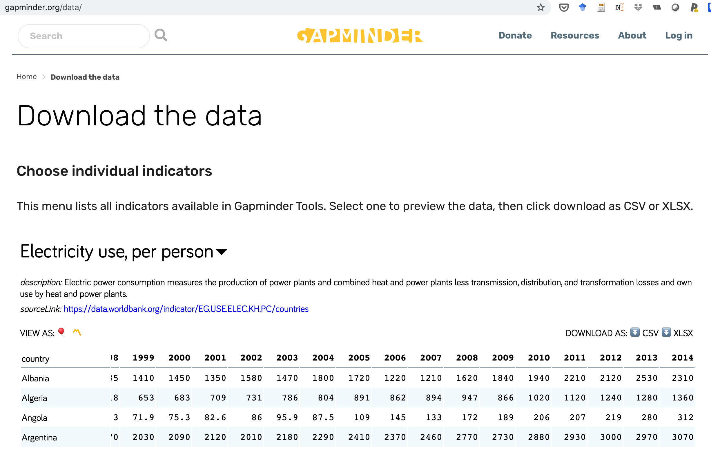
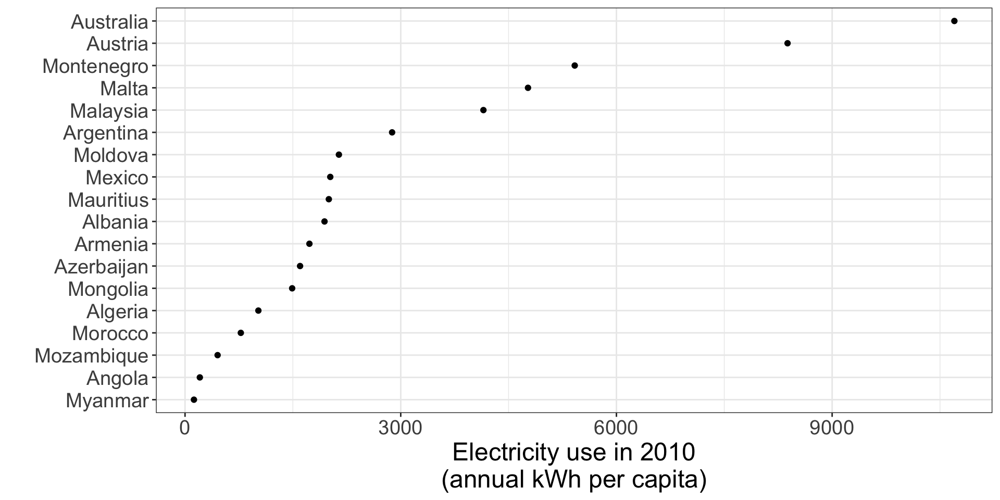
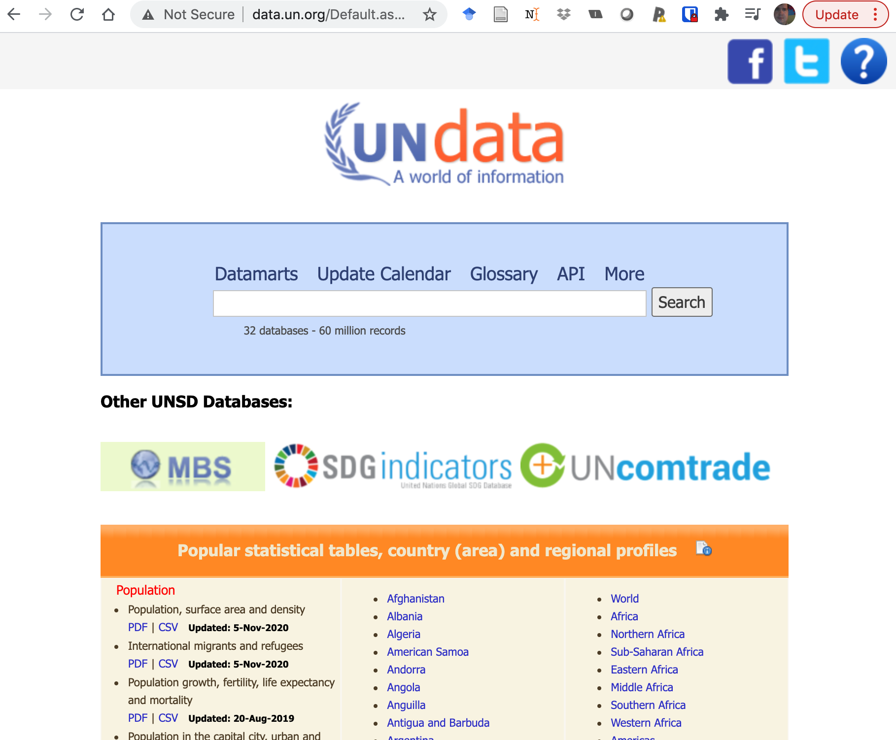
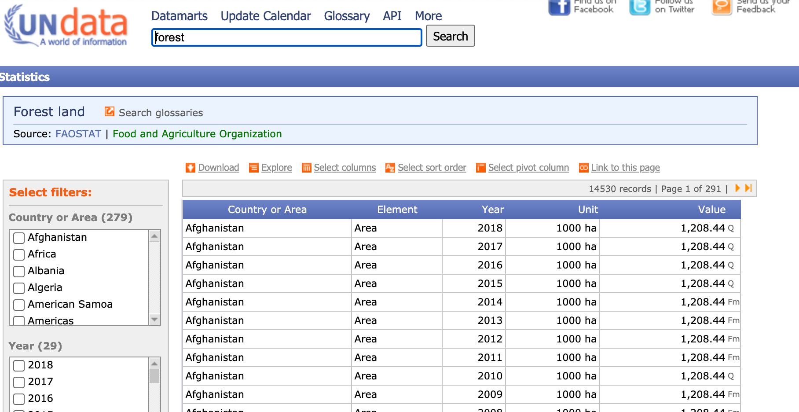
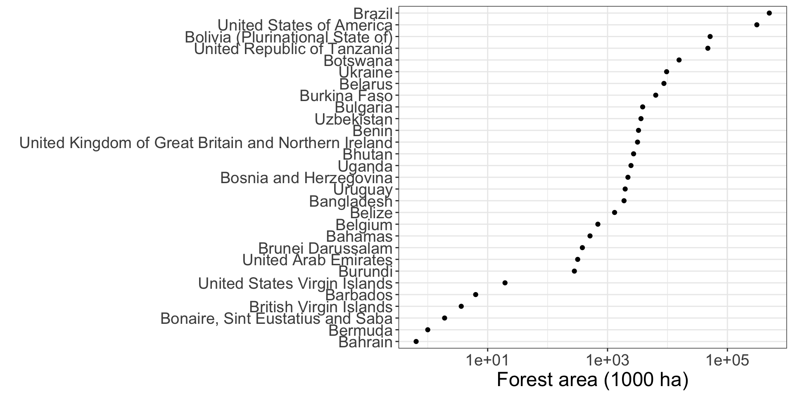
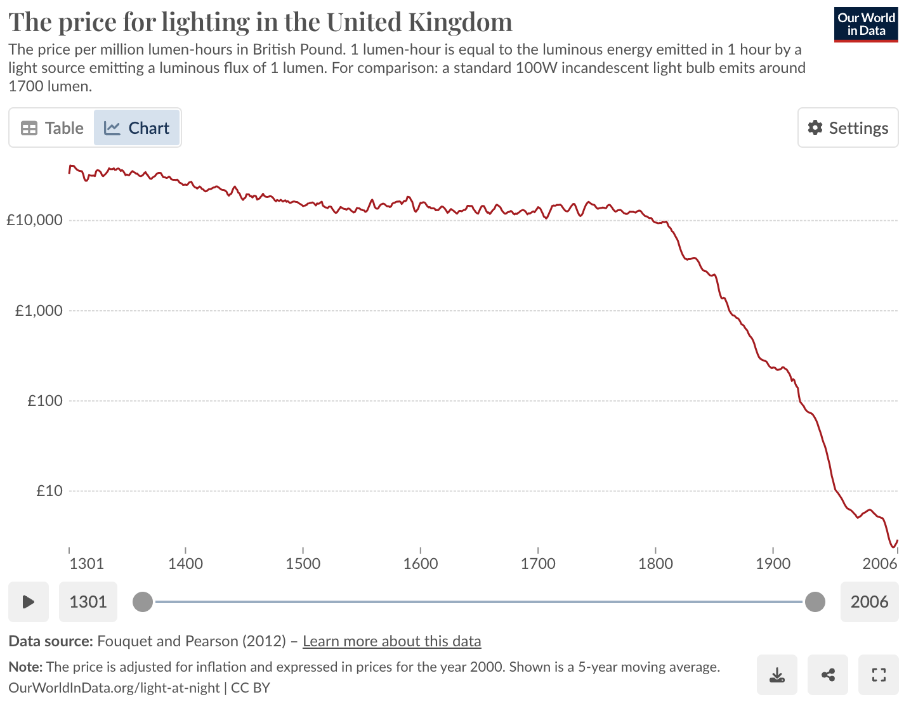
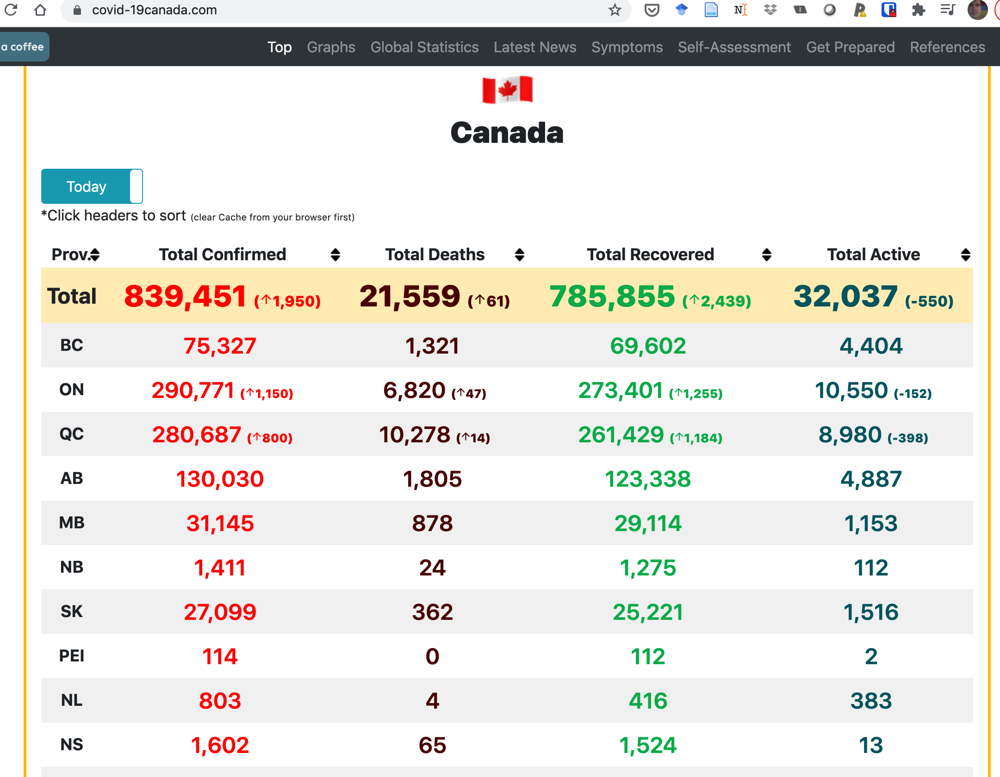

2024-02-29
Finding data
Asking questions that can be answered by data
Reading data
Checking data
Subsetting data (filtering observations, selecting variables)
Importance of metadata (source, units, how/why/when)
R packages
Websites: gapminder, Our World in Data, Tidy Tuesday
Large repositories: Statistics Canada, OECD
Specialized repositories: Many COVID data repositories
Small collections made by individuals
Government “Open data”
Many, many, many more sources: google
A clear description of the data, how and why they were collected
Downloadable spreadsheets, comma separated variables files, text files
R packages to download data
GitHub repositories (and others: pangaea.de, osf.io, and many, many more)
A license or terms and conditions of reuse and redistribution




forest_UN <- read_csv("static/L19/UNdata_Export_20210219_185253716.csv")
forest_UN %>%
filter(Year == 2017, Unit == "1000 ha",
str_starts(`Country or Area`, "[BU]")) %>%
ggplot(aes(x = Value, y = fct_reorder(`Country or Area`, Value))) +
geom_point() + labs(x = "Forest area (1000 ha)", y = "") + my_theme +
scale_x_log10() + theme(axis.title.y = element_text(size=10))


Addins > Paste as data.frame
data.frame(
stringsAsFactors = FALSE,
Prov. = c("Total","BC","ON","QC","AB",
"MB","NB","SK","PEI","NL","NS","YT","NT","NU",
"\U0001f6a2"),
Total.Confirmed = c("839,451 (arrow_upward1,950)",
"75,327","290,771 (arrow_upward1,150)",
"280,687 (arrow_upward800)","130,030","31,145","1,411","27,099",
"114","803","1,602","72","47","330","13"),
Total.Deaths = c("21,559 (arrow_upward61)",
"1,321","6,820 ( arrow_upward 47)",
"10,278 ( arrow_upward 14)","1,805","878","24","362","0","4","65","1",
"0","1","0"),
Total.Recovered = c("785,855 (arrow_upward2,439)",
"69,602","273,401 ( arrow_upward 1,255)",
"261,429 ( arrow_upward 1,184)","123,338","29,114","1,275","25,221",
"112","416","1,524","69","39","302","13"),
Total.Active = c("32,037 (-550)","4,404",
"10,550 (-152)","8,980 (-398)","4,887","1,153","112",
"1,516","2","383","13","2","8","27","0")
) Prov. Total.Confirmed Total.Deaths
1 Total 839,451 (arrow_upward1,950) 21,559 (arrow_upward61)
2 BC 75,327 1,321
3 ON 290,771 (arrow_upward1,150) 6,820 ( arrow_upward 47)
4 QC 280,687 (arrow_upward800) 10,278 ( arrow_upward 14)
5 AB 130,030 1,805
6 MB 31,145 878
7 NB 1,411 24
8 SK 27,099 362
9 PEI 114 0
10 NL 803 4
11 NS 1,602 65
12 YT 72 1
13 NT 47 0
14 NU 330 1
15 🚢 13 0
Total.Recovered Total.Active
1 785,855 (arrow_upward2,439) 32,037 (-550)
2 69,602 4,404
3 273,401 ( arrow_upward 1,255) 10,550 (-152)
4 261,429 ( arrow_upward 1,184) 8,980 (-398)
5 123,338 4,887
6 29,114 1,153
7 1,275 112
8 25,221 1,516
9 112 2
10 416 383
11 1,524 13
12 69 2
13 39 8
14 302 27
15 13 0What data were collected? (Column definitions, units, sampling)
Who collected the data?
Why were the data collected? (Purpose can influence utility)
How were the data collected? (Survey, random design or self-reported, experiment, methods)
When and where were the data collected? (Geographic, temporal scope)
Highlighted a few sources of data
Easiest case is a csv format file
Many R packages have data or have functions to retrieve data
Always examine your data to be sure it was read and interpreted correctly
Always look for metadata: units, how was data collected, who collected data, …
Course notes
Importing data from R4DS
Roger Peng’s notes on importing data
An older but comprehensive guide to importing data